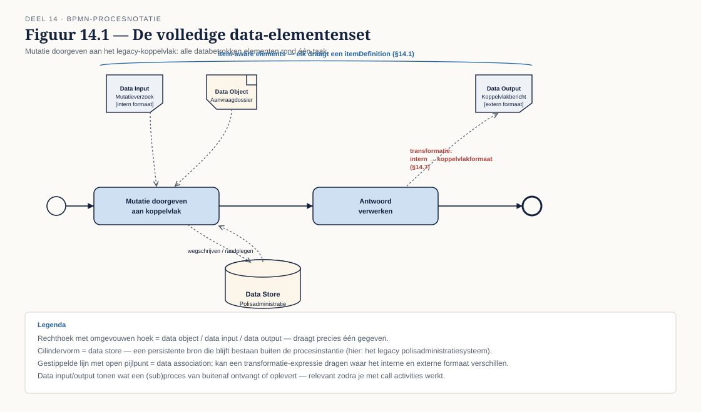
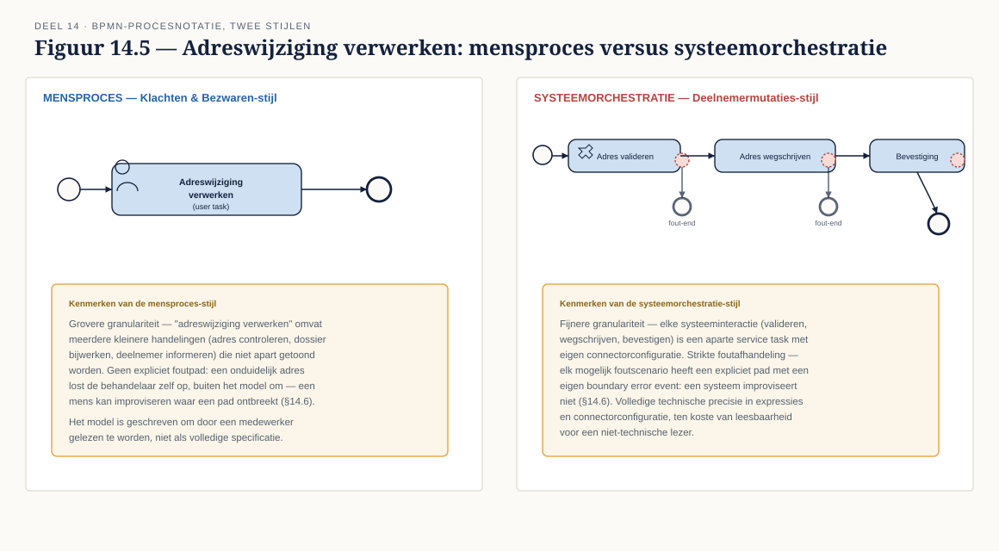
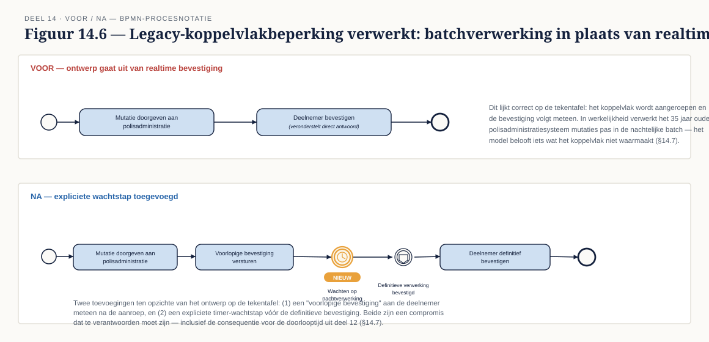

Deel 14 — BPMN gevorderd II: data, resources en semantiek
Slidedeck · Ductus-cursus BPMN, CMMN & DMN · niveau 2 · deel 14 van 30 · 24 slides
Slide 1 — Titelslide
BPMN gevorderd II: data, resources en semantiek — Deel 14
Beeldmerk, cursustitel
Spreeknotitie: Twee helften vandaag: verdieping van bekende notatie, en een botsing met de werkelijkheid.
Slide 2 — Leerdoelen
Na vandaag kun je…
Zes leerdoelen uit de reader
Spreeknotitie: Kort.
Slide 3 — Data volledig
Item-aware elements, data in/output, transformaties

Figuur 14.1
Spreeknotitie: Verdieping van niveau 1, deel 3 — nu als specificatiemiddel.
Slide 4 — Waarom transformaties ertoe doen
Meridiaan's format is niet het koppelvlak-format
Een data association met een transformatie-expressie
Spreeknotitie: Vooruitwijzing naar §14.7.
Slide 5 — Opdracht 1
Verrijk je to-be ontwerp met data
Werkboekverwijzing, timer 30 minuten
Spreeknotitie: Individueel in Conductus. Documenteer wat je weglaat, niet alleen wat je toevoegt.
Slide 6 — Data state
Wanneer verheldert het, wanneer vervuilt het
 Figuur 14.2
Figuur 14.2
Spreeknotitie: De vuistregel: alleen waar de toestand zelf het aandachtspunt is.
Slide 7 — Opdracht 2
Vijf fragmenten — verheldert of vervuilt de state?
Werkboekverwijzing, timer 15 minuten
Spreeknotitie: Individueel.
Slide 8 — Het procesmodel toont, het informatiemodel definieert
Dezelfde scheiding van zorgen, nu voor data
Twee lagen: procesmodel boven, informatiemodel eronder
Spreeknotitie: Terugverwijzing naar niveau 1, deel 1, §1.2.
Slide 9 — Het vier-definities-probleem, opnieuw
"Openstaande mutatie" — welke telt mee?
Twee definities naast elkaar met verschillende aantallen
Spreeknotitie: Hetzelfde patroon als "actieve deelnemer" uit niveau 1 — nieuw woord, zelfde valkuil.
Slide 10 — Opdracht 3
Schrijf de notitie over "openstaande mutatie"
Werkboekverwijzing, timer 25 minuten
Spreeknotitie: Individueel. Wie zou dit moeten vaststellen? Verwijs naar de rollen uit deel 11.
Slide 11 — Resources en performers
Wie of wat voert de activiteit uit
Een activiteit met een resource-toewijzing
Spreeknotitie: Kort.
Slide 12 — Model en autorisatie moeten kloppen
Wat er misgaat bij een discrepantie
Twee scenario's: een controle die niet wordt afgedwongen, een medewerker die terecht vastloopt
Spreeknotitie: Dit is geen theoretisch risico.
Slide 13 — Functiescheiding
Invoeren en goedkeuren door verschillende personen
Twee lanes met verschillende resources
Spreeknotitie: Vooruitwijzing naar deel 26 in niveau 3 (compliance en control).
Slide 14 — Multi-instance, volledig
Cardinaliteit · completion condition · instantiedata
 Figuur 14.4
Figuur 14.4
Spreeknotitie: Herhaling en verdieping van niveau 1, deel 4.
Slide 15 — Drie van de vijf
Wat gebeurt er met de resterende twee?
Vijf comitéleden, drie akkoorden, twee "hangende" instanties
Spreeknotitie: Dit is de vraag die opdracht 4 vraagt om expliciet te maken.
Slide 16 — Opdracht 4
Ontwerp de comitégoedkeuring volledig
Werkboekverwijzing, timer 20 minuten
Spreeknotitie: Individueel.
Slide 17 — Twee stijlen, één taal
Mensproces versus systeemorchestratie

Figuur 14.5, leeg
Spreeknotitie: Introductie.
Slide 18 — Vier verschillen
Granulariteit · foutafhandeling · naamgeving · zichtbaarheid
Figuur 14.5, ingevuld
Spreeknotitie: Dezelfde taak, twee volledig andere modellen.
Slide 19 — Waarom dit ertoe doet voor het Mutatieplatform
Vijf afdelingen, twee stijlen nodig
De vijf afdelingen verdeeld over het spectrum mensproces–systeemorchestratie
Spreeknotitie: Eén richtlijn die geen ruimte laat voor dit verschil, faalt voor de helft van het programma.
Slide 20 — Opdracht 5
Modelleer hetzelfde werk in twee stijlen
Werkboekverwijzing, timer 30 minuten
Spreeknotitie: Tweetallen.
Slide 21 — 35 jaar oud
Wat het legacy-koppelvlak wel en niet toestaat
Korte technische schets: batchverwerking, beperkte aanroepen, onvolledige foutrespons
Spreeknotitie: Dit is de eerste keer dat het legacy-systeem het ontwerp direct raakt.
Slide 22 — Vóór en ná
Een elegant ontwerp, en het compromis dat nodig is

Figuur 14.6
Spreeknotitie: Niet weggooien — aanpassen, en dat aanpassen verantwoorden.
Slide 23 — Opdracht 6
Het legacy-compromis — de kerndeliverable
Werkboekverwijzing, eisen op een rij
Spreeknotitie: Individueel, start nu, afronden buiten de les. Neem de tijd om de technische notitie goed te lezen.
Slide 24 — Opdracht 7, vooruitblik
Stellingen — en dan het zwaarste deel van niveau 2
Werkboekverwijzing, aankondiging deel 15
Spreeknotitie: Twee dagdelen: FEEL en boxed expressions eerst, tabelanalyse en testen daarna.